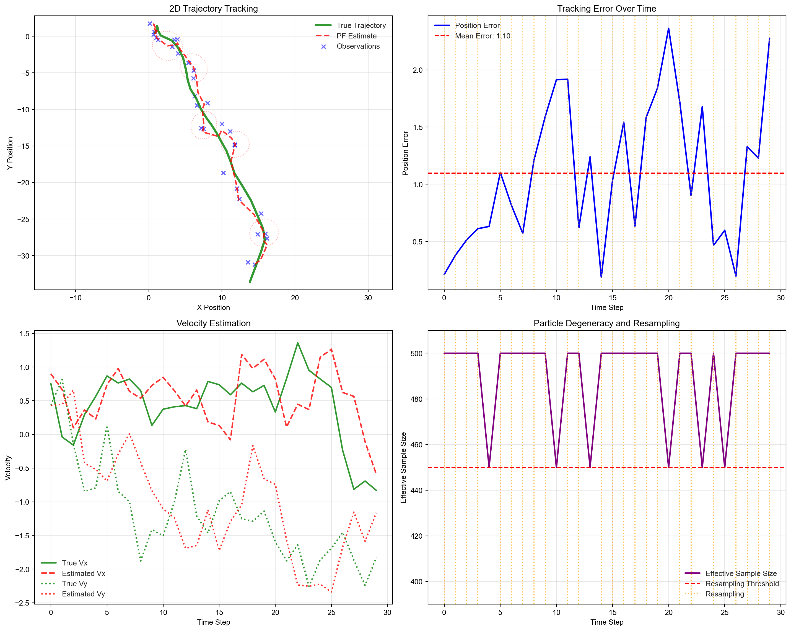
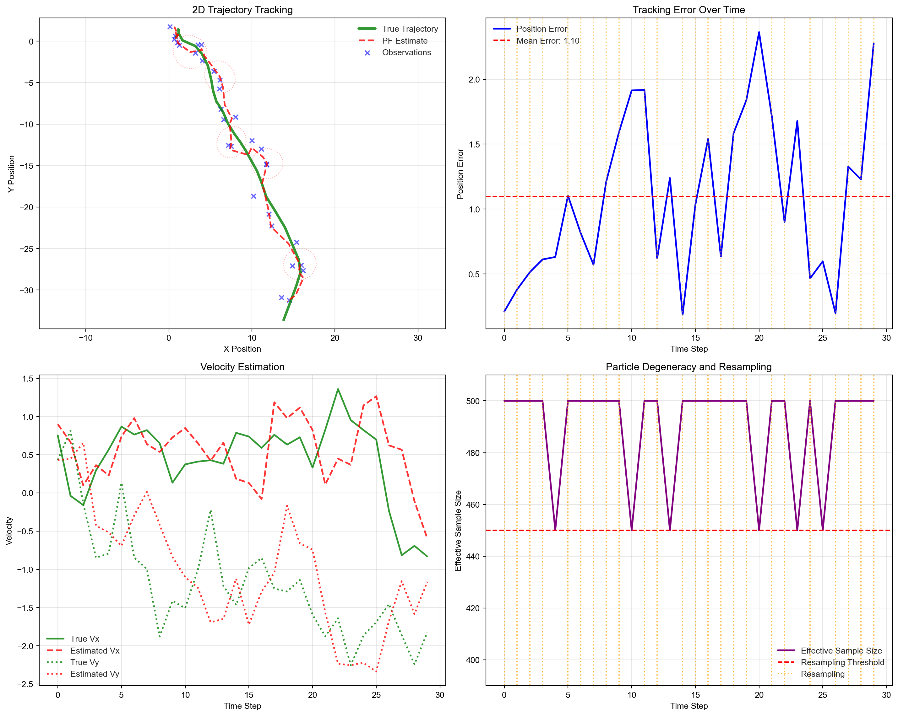

Particle Filter Performance:
Number of particles: 500
Final position error: 2.276
Mean position error: 1.097
Resampling frequency: 24/30 time stepsApurva Nakade
August 2, 2025
Particle filtering, also known as Sequential Monte Carlo (SMC) or Sequential Importance Sampling, is a powerful computational method for performing inference in dynamic systems where we have:
Consider a hidden Markov model where we observe a sequence \(\mathbf{y}_{1:T} = \{\mathbf{y}_1, \mathbf{y}_2, \ldots, \mathbf{y}_T\}\) and want to infer the hidden states \(\mathbf{x}_{1:T} = \{\mathbf{x}_1, \mathbf{x}_2, \ldots, \mathbf{x}_T\}\). The system is characterized by:
Our goal is to compute the filtering distribution \(p(\mathbf{x}_t | \mathbf{y}_{1:t})\), which represents our belief about the current state given all observations up to time \(t\).
For linear-Gaussian systems, the Kalman filter provides an exact analytical solution. However, for nonlinear or non-Gaussian systems, the filtering distribution cannot be computed analytically. The key challenges are:
Particle filters address these challenges by representing the filtering distribution using a set of particles (samples) with associated weights:
\[ p(\mathbf{x}_t | \mathbf{y}_{1:t}) \approx \sum_{i=1}^{N} w_t^{(i)} \delta(\mathbf{x}_t - \mathbf{x}_t^{(i)}), \]
where:
This Monte Carlo approximation allows us to:
Key Insight: Particle filters extend importance sampling to sequential settings, where we maintain and update a particle approximation over time rather than drawing fresh samples for each time step.
Particle filters are widely used in:
The flexibility to handle complex, nonlinear dynamics makes particle filters indispensable when Kalman filters fail.
A state-space model (SSM) provides a general framework for modeling dynamic systems with hidden states. The model consists of two key components:
State Evolution (Process Model): \[ \mathbf{x}_t = \mathbf{f}_t(\mathbf{x}_{t-1}, \mathbf{v}_t), \]
where:
Observation Model (Measurement Model): \[ \mathbf{y}_t = \mathbf{h}_t(\mathbf{x}_t, \mathbf{w}_t), \]
where:
The noise terms \(\mathbf{v}_t\) and \(\mathbf{w}_t\) are typically assumed to be independent across time and mutually independent, though their distributions can be arbitrary.
In probabilistic terms, the state-space model is characterized by:
State Transition Density: \[ p(\mathbf{x}_t | \mathbf{x}_{t-1}) = p(\mathbf{x}_t | \mathbf{x}_{t-1}, \boldsymbol{\theta}), \]
Observation Density: \[ p(\mathbf{y}_t | \mathbf{x}_t) = p(\mathbf{y}_t | \mathbf{x}_t, \boldsymbol{\theta}), \]
Initial State Distribution: \[ p(\mathbf{x}_0) = p(\mathbf{x}_0 | \boldsymbol{\theta}), \]
where \(\boldsymbol{\theta}\) represents model parameters (assumed known for now).
The state-space model embodies two crucial Markov assumptions:
Markov Property for States: The future state depends only on the current state, not the entire history: \[ p(\mathbf{x}_t | \mathbf{x}_{0:t-1}) = p(\mathbf{x}_t | \mathbf{x}_{t-1}) \]
Conditional Independence of Observations: Given the current state, the observation is independent of all other states and observations: \[ p(\mathbf{y}_t | \mathbf{x}_{0:t}, \mathbf{y}_{1:t-1}) = p(\mathbf{y}_t | \mathbf{x}_t) \]
These assumptions lead to the joint distribution of states and observations:
\[ p(\mathbf{x}_{0:T}, \mathbf{y}_{1:T}) = p(\mathbf{x}_0) \prod_{t=1}^{T} p(\mathbf{x}_t | \mathbf{x}_{t-1}) p(\mathbf{y}_t | \mathbf{x}_t) \]
When the state space is discrete and finite, i.e., \(x_t \in \{1, 2, \ldots, K\}\), the state-space model becomes a Hidden Markov Model. HMMs are characterized by:
Transition Matrix: \[ A_{ij} = P(x_t = j | x_{t-1} = i), \quad \sum_{j=1}^{K} A_{ij} = 1 \]
Emission Matrix: \[ B_{jk} = P(y_t = k | x_t = j) \quad \text{(for discrete observations)} \]
Initial Distribution: \[ \pi_i = P(x_0 = i), \quad \sum_{i=1}^{K} \pi_i = 1 \]
Consider a simple weather model where:
The transition matrix might be: \[ \mathbf{A} = \begin{pmatrix} 0.8 & 0.2 \\ 0.3 & 0.7 \end{pmatrix} \]
The emission matrix might be: \[ \mathbf{B} = \begin{pmatrix} 0.9 & 0.1 \\ 0.2 & 0.8 \end{pmatrix} \]
This captures the intuition that sunny days tend to follow sunny days, and wet ground is more likely when it’s raining.
Example 18.1 (Example: 2D Object Tracking) Consider tracking a moving object (e.g., aircraft, vehicle, or person) in a 2D plane using noisy position measurements from sensors like radar or GPS.
State: Position and velocity \(\mathbf{x}_t = [p_x, p_y, v_x, v_y]^{\top} \in \mathbb{R}^4\)
State Evolution: The object follows a constant velocity model with random acceleration disturbances: \[ \mathbf{x}_t = \mathbf{F} \mathbf{x}_{t-1} + \mathbf{G} \mathbf{a}_t \]
where: \[ \mathbf{F} = \begin{pmatrix} 1 & 0 & \Delta t & 0 \\ 0 & 1 & 0 & \Delta t \\ 0 & 0 & 1 & 0 \\ 0 & 0 & 0 & 1 \end{pmatrix}, \quad \mathbf{G} = \begin{pmatrix} \frac{(\Delta t)^2}{2} & 0 \\ 0 & \frac{(\Delta t)^2}{2} \\ \Delta t & 0 \\ 0 & \Delta t \end{pmatrix} \]
and \(\mathbf{a}_t = [a_x, a_y]^{\top} \sim \mathcal{N}(\mathbf{0}, \sigma_a^2 \mathbf{I})\) represents random acceleration.
Observations: Noisy position measurements from sensors: \[ \mathbf{y}_t = \mathbf{H} \mathbf{x}_t + \mathbf{w}_t = \begin{pmatrix} 1 & 0 & 0 & 0 \\ 0 & 1 & 0 & 0 \end{pmatrix} \mathbf{x}_t + \mathbf{w}_t \]
where \(\mathbf{w}_t \sim \mathcal{N}(\mathbf{0}, \mathbf{R})\) with \(\mathbf{R} = \text{diag}(\sigma_x^2, \sigma_y^2)\).
Given the state-space model, we are interested in several inference problems:
1. Filtering: Estimate the current state given past and current observations: \[ p(\mathbf{x}_t | \mathbf{y}_{1:t}) \]
2. Prediction: Predict future states given current information: \[ p(\mathbf{x}_{t+k} | \mathbf{y}_{1:t}), \quad k > 0 \]
3. Smoothing: Estimate past states given all observations: \[ p(\mathbf{x}_t | \mathbf{y}_{1:T}), \quad t < T \]
4. Marginal Likelihood: Compute the probability of the observed sequence: \[ p(\mathbf{y}_{1:T}) = \int p(\mathbf{x}_{0:T}, \mathbf{y}_{1:T}) d\mathbf{x}_{0:T} \]
The most intuitive approach is the bootstrap filter. Here, we generate new particles by simply following the natural dynamics of the system (the state evolution model), then update weights based on how well each particle explains the new observation.
Bootstrap Weight Update: \[ \boxed{\tilde{w}_t^{(i)} \propto w_{t-1}^{(i)} \cdot p(\mathbf{y}_t | \mathbf{x}_t^{(i)})} \]
What this means:
Why This Works: We’re essentially asking “given what we observed, which particles were in the right place?” Particles that predicted something close to the actual observation become more important.
Sometimes we want to be smarter about where we place new particles instead of just following the natural dynamics. We might use a proposal distribution \(q(\mathbf{x}_t^{(i)} | \cdot)\) that incorporates the current observation to guide particles toward more promising regions.
Why Use a Different Proposal?
Example: If you are tracking an object in the 2D plane that usually moves slowly, but you suddenly observe it far from where you expected. The bootstrap filter would propose particles near the previous location (following slow dynamics), but they’d all get low weights. A smarter proposal would generate particles closer to where the observation suggests the object actually is.
When we do this, we need to correct our weights using importance sampling:
\[ \boxed{\tilde{w}_t^{(i)} \propto w_{t-1}^{(i)} \cdot p(\mathbf{y}_t | \mathbf{x}_t^{(i)}) \cdot \frac{ p(\mathbf{x}_t^{(i)} | \mathbf{x}_{t-1}^{(i)})}{q(\mathbf{x}_t^{(i)} | \mathbf{x}_{0:t-1}^{(i)}, \mathbf{y}_{1:t})}} \]
What the correction does:
Intuition: If we artificially push particles toward certain regions (high \(q\)), we need to down-weight them proportionally. If we place particles in regions that are naturally likely (high \(p\)), we up-weight them.
The bootstrap filter is the special case where \(q(\mathbf{x}_t^{(i)} | \cdot) = p(\mathbf{x}_t^{(i)} | \mathbf{x}_{t-1}^{(i)})\), so the transition probabilities cancel out and we get the simpler formula.
The effective sample size \(N_{\text{eff}} = 1/\sum_{i=1}^N (w_t^{(i)})^2\) measures particle diversity, with \(N_{\text{eff}} = 1\) indicating complete degeneracy (one particle has weight 1) and \(N_{\text{eff}} = N\) indicating uniform weights.
Connection to Variance: The effective sample size is inversely related to the variance of the weight distribution. For a discrete probability mass function with weights \(\{w^{(i)}\}\), the variance is:
\[\text{Var}(w) = \sum_{i=1}^N (w^{(i)})^2 - \left(\sum_{i=1}^N w^{(i)}\right)^2\]
Since the weights are normalized (\(\sum_{i=1}^N w^{(i)} = 1\)), this becomes:
\[\text{Var}(w) = \sum_{i=1}^N (w^{(i)})^2 - 1\]
Therefore: \(\sum_{i=1}^N (w^{(i)})^2 = \text{Var}(w) + 1\)
This shows that \(N_{\text{eff}} = \frac{1}{\text{Var}(w) + 1}\), meaning:
When weights are highly unequal (high variance), most particles contribute little to the approximation, reducing the effective sample size. When weights are nearly uniform (low variance), all particles contribute meaningfully.
Resampling fixes the weight imbalance by creating a new set of particles \(\{\tilde{\mathbf{x}}_t^{(i)}\}_{i=1}^N\). We randomly select particles based on their weights - particles with higher weights get picked more often, while particles with low weights may be discarded.
We draw \(N\) new particles from the current set, where each particle’s chance of being selected equals its weight. A particle with weight 0.4 has a 40% chance of being chosen on each draw. After resampling all particles get equal weight \(w_t^{(i)} = 1/N\) since they now represent an unweighted sample from our belief distribution.
Resampling solves the weight problem (restores \(N_{\text{eff}} = N\)) but introduces randomness. Sometimes good particles are lost by bad luck, and we end up with multiple copies of the same particle, reducing diversity.
Input: \(\{\mathbf{x}_0^{(i)}, w_0^{(i)} = 1/N\}_{i=1}^N\), observations \(\mathbf{y}_{1:T}\)
For \(t = 1, \ldots, T\):
Output: \(p(\mathbf{x}_t | \mathbf{y}_{1:t}) \approx \sum_{i=1}^N w_t^{(i)} \delta(\mathbf{x}_t - \mathbf{x}_t^{(i)})\)
Weight Update Derivation: For the bootstrap proposal \(q(\mathbf{x}_t | \mathbf{x}_{t-1}, \mathbf{y}_{1:t}) = p(\mathbf{x}_t | \mathbf{x}_{t-1})\), the weight update simplifies to:
\[ \tilde{w}_t^{(i)} = w_{t-1}^{(i)} \cdot p(\mathbf{y}_t | \mathbf{x}_t^{(i)}) \]
For the tracking model, the likelihood is:
\[ p(\mathbf{y}_t | \mathbf{x}_t^{(i)}) = \mathcal{N}(\mathbf{y}_t; \mathbf{H} \mathbf{x}_t^{(i)}, \mathbf{R}) \]
where \(\mathbf{H} \mathbf{x}_t^{(i)} = [p_x^{(i)}, p_y^{(i)}]^{\top}\) extracts the position components from the state vector \(\mathbf{x}_t^{(i)} = [p_x^{(i)}, p_y^{(i)}, v_x^{(i)}, v_y^{(i)}]^{\top}\). The observation residual is:
\[ \mathbf{r}_t^{(i)} = \mathbf{y}_t - \mathbf{H} \mathbf{x}_t^{(i)} = \begin{pmatrix} y_{x,t} - p_x^{(i)} \\ y_{y,t} - p_y^{(i)} \end{pmatrix} \]
Therefore, the weight update becomes:
\[ \tilde{w}_t^{(i)} = w_{t-1}^{(i)} \cdot \mathcal{N}(\mathbf{y}_t; \mathbf{H} \mathbf{x}_t^{(i)}, \mathbf{R}) = w_{t-1}^{(i)} \cdot \frac{1}{\sqrt{(2\pi)^2 |\mathbf{R}|}} \exp\left(-\frac{1}{2} (\mathbf{r}_t^{(i)})^{\top} \mathbf{R}^{-1} \mathbf{r}_t^{(i)}\right) \]
Bootstrap Particle Filter Algorithm for Object Tracking:
Input: \(\{\mathbf{x}_0^{(i)}, w_0^{(i)} = 1/N\}_{i=1}^N\), observations \(\mathbf{y}_{1:T}\)
For \(t = 1, \ldots, T\):
Predict: For \(i = 1, \ldots, N\): \[\mathbf{x}_t^{(i)} = \mathbf{F} \mathbf{x}_{t-1}^{(i)} + \boldsymbol{\epsilon}_t^{(i)}, \quad \boldsymbol{\epsilon}_t^{(i)} \sim \mathcal{N}(\mathbf{0}, \mathbf{Q})\]
Weight: For \(i = 1, \ldots, N\): \[\tilde{w}_t^{(i)} = w_{t-1}^{(i)} \cdot \mathcal{N}(\mathbf{y}_t; \mathbf{H} \mathbf{x}_t^{(i)}, \mathbf{R})\]
Normalize: For \(i = 1, \ldots, N\): \[w_t^{(i)} = \frac{\tilde{w}_t^{(i)}}{\sum_{j=1}^N \tilde{w}_t^{(j)}}\]
Estimate: \[\hat{\mathbf{x}}_t = \sum_{i=1}^N w_t^{(i)} \mathbf{x}_t^{(i)}\]
Resample: If \(N_{\text{eff}} = 1/\sum_{i=1}^N (w_t^{(i)})^2 < N_{\text{threshold}}\):
Output: Position estimate \(\hat{\mathbf{p}}_t = [\hat{p}_{x,t}, \hat{p}_{y,t}]^{\top}\) and velocity estimate \(\hat{\mathbf{v}}_t = [\hat{v}_{x,t}, \hat{v}_{y,t}]^{\top}\)
The following implementation demonstrates a complete particle filter for 2D object tracking. The demonstration tracks an object moving in 2D space with:
The visualization shows the particle filter’s ability to track the true trajectory despite noisy observations, with automatic resampling maintaining particle diversity throughout the simulation.

Particle Filter Performance:
Number of particles: 500
Final position error: 2.276
Mean position error: 1.097
Resampling frequency: 24/30 time stepsParticle filters provide a powerful and flexible framework for tracking hidden states in complex dynamic systems. Unlike the Kalman filter, which requires linear dynamics and Gaussian noise, particle filters can handle arbitrary nonlinearities and any noise distribution by representing beliefs as a cloud of weighted samples.
Particle filters excel when:
Consider alternatives when: